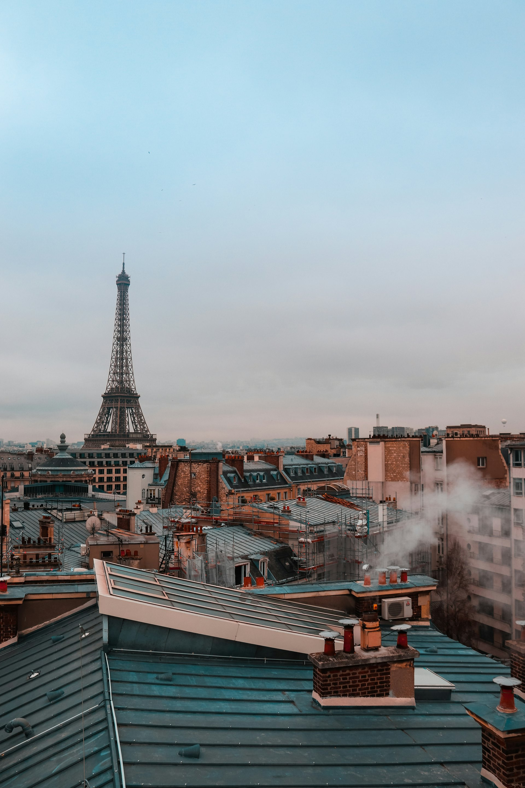

Visiting Paris
Paris works all year round, and winter is the best season for museums. You just need to know what to book, which day each place is closed and when to turn up.
Photo: Adrien / Unsplash
Paris is the most visited city in the world, and it shows: most major sights now ask you to book a time slot, even when entry is free. The good news is that almost everything is less than half an hour apart by metro, and the great monuments line the Seine.
Remember three closing days: the Louvre is closed on Tuesdays, Orsay and Versailles on Mondays. From November to March the queues are shorter, several monuments are free on the first Sunday of the month and late museum openings let you end the day indoors. Each guide below tells you what to book, how to get there and when to go.
Monuments and views
-
 Eiffel Tower
Eiffel TowerThree levels, over 300 metres and the most famous view in Paris. Plan ahead: official tickets, the right time slot and, if your legs are up to it, the stairs.
-
 Notre-Dame
Notre-DameReopened in December 2024 after the fire, the cathedral has its pale stone and its light back. Entry is free; booking a slot saves a lot of time.
-
 Sainte-Chapelle
Sainte-ChapelleFifteen windows, over a thousand stained-glass scenes and hardly any wall. On a sunny day, the upper chapel is one of the most beautiful interiors in the world.
-
 Arc de Triomphe
Arc de TriompheAt the top of the Champs-Élysées, 284 steps lead to a rooftop where twelve avenues fan out like a star. It is one of the most striking views in Paris.
-
 Palais Garnier
Palais GarnierMarble, gilding and a Chagall ceiling: the Palais Garnier is the most lavish interior in Paris, and you can explore it on your own during the day.
-
 Catacombs
CatacombsTwenty metres below Paris, the bones of millions of Parisians line the galleries. Renovated in 2026, the Catacombs can only be visited with a booking.
Museums and palaces
-
 Louvre
LouvreYou cannot see the world’s largest museum in one go: you plan it. Book your time slot, pick three or four sections and avoid Tuesday, when it is closed.
-
 Musée d’Orsay
Musée d’OrsayMonet, Renoir, Van Gogh, Degas: the world’s largest Impressionist collection, in a former railway station. Thursday’s late opening is the best time to go.
-
 Versailles
VersaillesThe Hall of Mirrors, the King’s apartments, Le Nôtre’s gardens and Marie-Antoinette’s estate: a full day out, forty minutes from Paris.
Neighbourhoods and walks
-
 Montmartre
MontmartreA village on a hill above Paris: steps, vines, painters’ studios and, at the top, the white basilica of the Sacré-Cœur.
-
 Seine cruise
Seine cruiseAn hour on the water and Paris glides by: Notre-Dame, the Louvre, Orsay, the Eiffel Tower. It is the best way to get your bearings on day one.
-
 Le Marais
Le Marais17th-century mansions, free museums, falafel and shops open on Sundays: the Marais is the most pleasant neighbourhood in Paris to explore on foot.
-
 Latin Quarter and Luxembourg
Latin Quarter and LuxembourgThe Paris of students and bookshops, from the Panthéon to the Luxembourg Gardens. A neighbourhood to explore on foot, between two cafés.
Days out and seasonal
-
 Disneyland Paris
Disneyland ParisTwo parks, a dining village and, since March 2026, World of Frozen. Disneyland Paris is a direct RER ride from central Paris.
-
 Christmas in Paris
Christmas in ParisThe Champs-Élysées lights go on on 22 November 2026, and its Christmas market returns after ten years. Here is where to find the magic of Christmas in Paris.